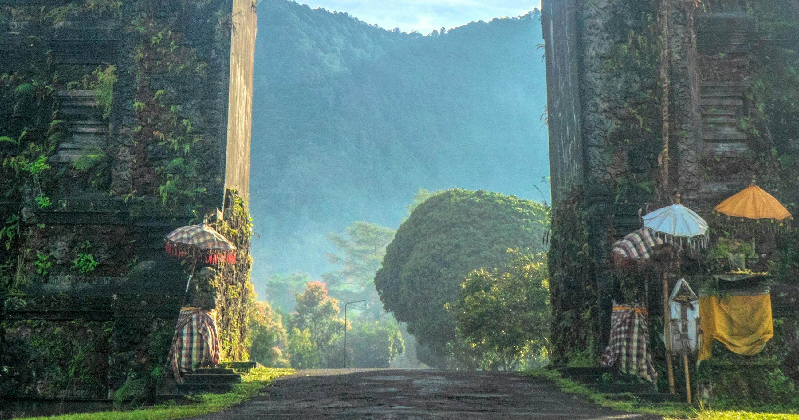
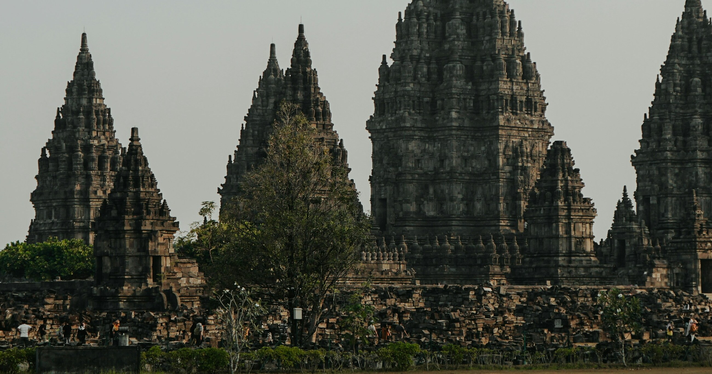
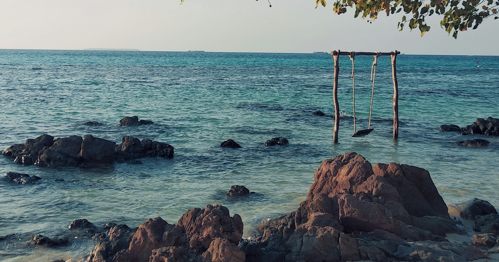
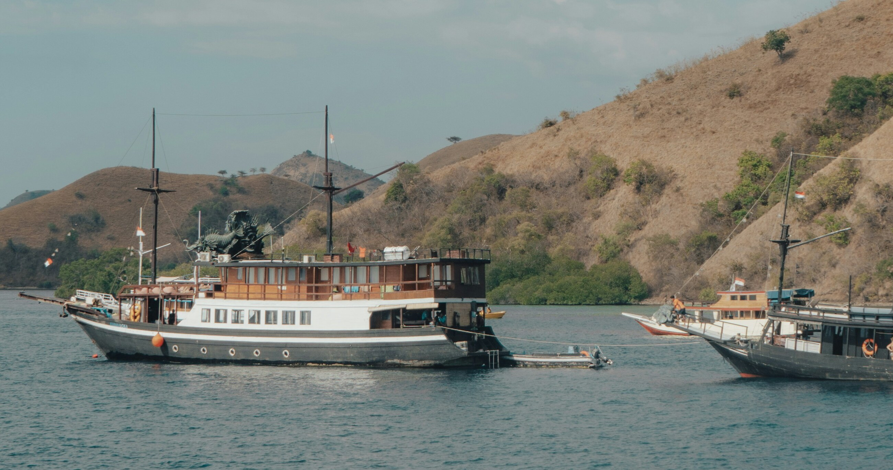

Bali, dikenal sebagai "Pulau Dewata", adalah destinasi wisata yang terkenal di seluruh dunia. Pulau ini menawarkan pemandangan alam yang menakjubkan, pantai berpasir putih, serta budaya yang kaya dengan tradisi Hindu. Tempat-tempat seperti Ubud, Tanah Lot, dan Pantai Kuta adalah beberapa tujuan utama bagi wisatawan yang mencari keindahan alam, ketenangan spiritual, dan kehidupan malam yang semarak.

BROMO
Gunung Bromo, yang terletak di Jawa Timur, adalah salah satu gunung berapi paling ikonik di Indonesia. Pemandangan matahari terbit di atas kawah Bromo merupakan pengalaman yang sangat memukau dan tidak boleh dilewatkan. Wisatawan dapat menikmati trekking melintasi lautan pasir, mengunjungi Pura Luhur Poten, dan menikmati pemandangan alam yang dramatis di kawasan Taman Nasional Bromo Tengger Semeru.
YOGYAKARTA
Yogyakarta, sering disebut sebagai "Jogja," adalah pusat budaya dan seni di Jawa. Kota ini terkenal dengan Keraton Yogyakarta, Candi Borobudur dan Prambanan, serta seni batik dan wayang kulit. Selain warisan budaya, Yogyakarta juga menawarkan petualangan kuliner yang kaya dengan makanan tradisional seperti gudeg dan angkringan.

KARIMUN JAWA
Karimun Jawa adalah gugusan pulau tropis yang terletak di Laut Jawa, Jawa Tengah. Terkenal karena keindahan terumbu karangnya, perairan yang jernih, dan pantai berpasir putih, Karimun Jawa adalah surga bagi para pecinta snorkeling dan diving. Wisatawan dapat menjelajahi pulau-pulau kecil, berenang bersama hiu di penangkaran, atau hanya bersantai menikmati pemandangan laut yang memukau.

LABUAN BAJO
Labuan Bajo, di ujung barat Pulau Flores, adalah pintu gerbang menuju Taman Nasional Komodo, rumah bagi komodo, spesies kadal terbesar di dunia. Selain itu, Labuan Bajo juga terkenal dengan spot diving kelas dunia, pantai berwarna merah muda (Pink Beach), dan pemandangan matahari terbenam yang spektakuler. Tempat ini menawarkan perpaduan sempurna antara petualangan alam dan keajaiban bawah laut.

MANDALIKA INTERNATIONAL CIRCUIT
Mandalika International Circuit, yang terletak di Lombok, Nusa Tenggara Barat, adalah sirkuit balap motor internasional terbaru di Indonesia. Sirkuit ini telah menarik perhatian dunia sebagai tuan rumah berbagai ajang balap kelas dunia seperti MotoGP. Selain balapan, Mandalika menawarkan pemandangan pantai yang menakjubkan, dengan bukit hijau dan laut biru yang memukau, menjadikannya tujuan wisata yang unik bagi penggemar olahraga dan pecinta alam.